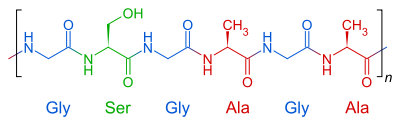
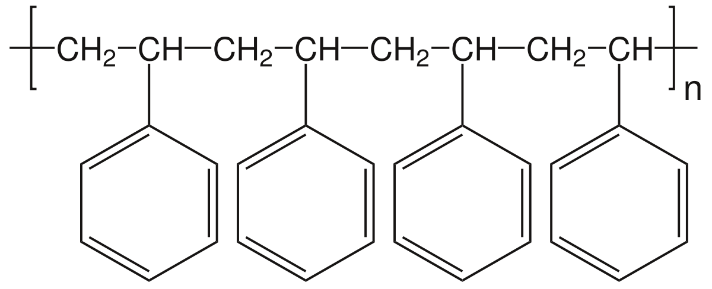

MAC

Una empresa de productos dedicada al maquillaje y cosmeticos
canadience. tiene una gran cantidad de productos para el consumo
diario. La mayoria de los productos MAC son libres de aceites
Algunos ingredientes que usa mac en sus productos
- Agua/Water
- Aceite de ricino/Ricinus communis
- derivado de grasas/Dipentaerythrityl
- polietileno/pvp
- grasa de oveja/lanolin oil
- antioxidante/tocopheril acetate
function quimica(){ return("") }
NYX

Es una compañia de cosmeticos subsidiaria de L'OREAL marca libre
crueldad animal y sus productos son veganos es moderna ya que esta
en vanguardia de las tendencias. Algunos ingredientes que usa mac
en sus productos
- Agua/Water
- Talco/talc
- polideceno de hidrogeno/hydrogenated polydecene
- polietileno/pvp
- silicona de magnesio/magnesium silicate
- antioxidante/tocopheril acetate
function quimica(){ return("") }
CHANNEL

Fundada por la diseñadora Coco Chanel, en 1910 La marca se encarga
de diseñar y confeccionar articulos de lujo como bolsos, perfumes
y cosmeticos, enre otros. Algunos ingredientes que usa mac en sus
productos
- Agua/Water
- Aceite de ricino/Ricinus communis
- derivado de grasas/Dipentaerythrityl
- polietileno/pvp
- grasa de oveja/lanolin oil
- antioxidante/tocopheril acetate
function quimica(){ return("") }
REVLON

Una empresa de cosmeticos estadounidence, especializada en el
cuidado
de la piel, fragancias y cuidado personal,fundada en 1932. Fue una
de las primeras marcas de maquillaje en aparecer. Algunos
ingredientes que usa mac en sus productos
- Agua/Water
- Aceite de ricino/Ricinus communis
- derivado de grasas/Dipentaerythrityl
- polietileno/pvp
- grasa de oveja/lanolin oil
- antioxidante/tocopheril acetate
function quimica(){ return("") }
MARCAS COLOMBIANAS

SP PRO - KHOL - DOLCE BELLA - AME - TONOS - KAPRIKA - ATENEA Son
algunas de las marcas de maquillaje colombiano de exelente calidad
elavorados de manera muy cuidadosa y con ingredientes sanos para
tu piel. Algunos ingredientes que usa mac en sus productos
- Agua/Water
- Aceite de ricino/Ricinus communis
- derivado de grasas/Dipentaerythrityl
- polietileno/pvp
- grasa de oveja/lanolin oil
- antioxidante/tocopheril acetate
function quimica(){ return("") }